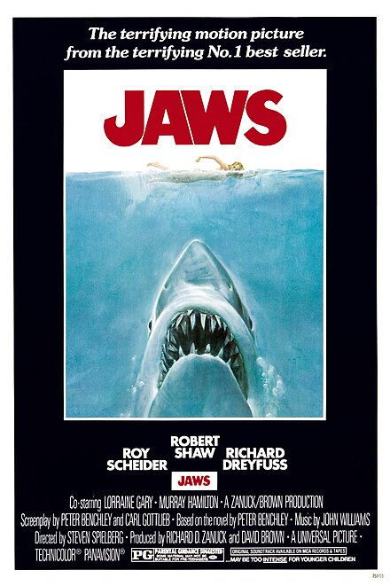

Jaws is a 1975 thriller film directed by Steven Spielberg. It is based on Peter Benchley's 1974 novel of the same name. The film follows a police chief, a marine biologist, and a professional shark hunter as they hunt a man-eating great white shark terrorizing a beach town.
Source: Wikipedia
When a young woman is killed by a shark near the New England tourist town of Amity Island, police chief Martin Brody (Roy Scheider) wants to close the beaches, but mayor Larry Vaughn (Murray Hamilton) overrules him, fearing that the loss of tourist revenue will cripple the town. Ichthyologist Matt Hooper (Richard Dreyfuss) and grizzled ship captain Quint (Robert Shaw) offer to help Brody capture the killer beast, and the trio engage in an epic battle of man vs. nature.
The film's troubled production, including mechanical shark malfunctions, led Spielberg to shoot many scenes without showing the shark, increasing suspense. The film’s iconic music was composed by John Williams.
Jaws became the first-ever summer blockbuster, revolutionizing Hollywood's approach to movie releases. It grossed over $470 million worldwide and spawned multiple sequels. "Jaws" left a significant legacy by not only revolutionizing the summer blockbuster movie genre but also profoundly impacting public perception of sharks, creating a widespread fear of these creatures due to its portrayal of a man-eating great white, despite the film's fictional nature, leading to a decline in shark populations and a surge in shark research and conservation efforts aimed at correcting this misconception; essentially, "Jaws" is considered a cultural phenomenon that continues to influence how people view sharks today, even while raising awareness about their importance in the ecosystem